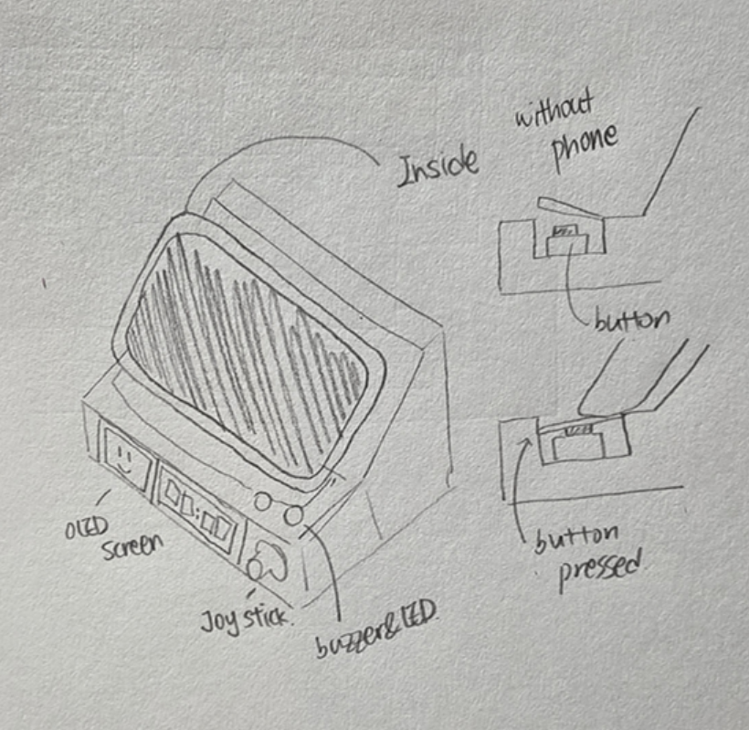

Project Concept and Motivation
StayPut is an interactive phone dock that helps students become more aware of unconscious phone checking while studying. I often pick up my phone without a reason, which disrupts my focus. I want to recognize this habit and gradually change it.
When the phone is lifted off the stand during a focus session, a physical switch detects the change. The Arduino counts the pickup and responds through an OLED display and a short buzzer sound. The OLED also shows a focus timer, facial expressions, and a session summary.
Anticipated Bill of Materials
- Arduino UNO R3 (control logic)
- Physical switch (phone detection)
- Joystick module (timer adjustment)
- Push button (start/stop)
- Small OLED (timer and feedback)
- Passive buzzer (sound feedback)
- LED + resistor (focus indicator)
- Breadboard and wires (connections)
- 3D-printed or cardboard enclosure
- USB cable (power)
Timeline and Contingency
- Plan the circuit and test the phone-activated switch.
- Connect the OLED, joystick, button, buzzer, and LED.
- Program the focus timer, pickup counter, and feedback.
- Build the phone stand and enclosure using 3D printing or cardboard.
- Integrate the circuit, test the complete product, and refine it.
Plan B: If the angled pressure-switch mechanism is not working, I will use a flat tray with a directly activated switch. If 3D printing is not possible, I will build the enclosure using cardboard or foam board.

Initial concept sketch. Design and component placement may change during prototyping.
How the Phone Detection Works
The phone's weight presses a physical switch beneath the stand. Removing the phone releases the switch, allowing the Arduino to record a pickup during an active focus session. This mechanism will be tested during prototyping.